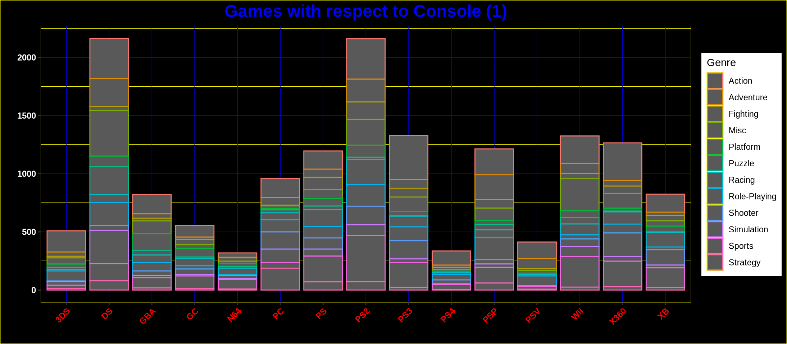

dataVG <- read_csv("vgsales.csv")
dataPlatformFreq <- dataVG %>%
select(Name, Platform, Genre, Global_Sales)
dataPlatformFreq <- transform(dataPlatformFreq,"Platform_Frequency" =
ave(seq(nrow(dataVG)), Platform, FUN = length)) %>%
group_by(Platform)
getmode <- function(v) {
uniqv <- unique(v)
uniqv[which.max(tabulate(match(v, uniqv)))]
}Exploratory: ‘Best’ Video Game
Work in Progress
When it comes to hobbies, few would rank above video games. The synergistic mix of audio and visual design give it the most amount of versatility. From casual single screen puzzle games to open world, story rich experiences that give the player freedom to decide how they’d like to enjoy it. The data I’m working with is titled Video Game Sales from Gregory Smith in kaggle, it compiles sales data from more than 16,500 games.
With it I will attempt to answer a couple of questions:
What is the best video game? Dependent on region? Dependent on console? Dependent on genre?
There are many different ways to classify a game as ‘good’ many of which are not included in the data, this isn’t going to be a commentary of the quality of these games, just their commercial success. Several of these titles were sold multiple consoles, their sales would the total between them.
After cleaning the data a bit we could compile the unique values under “Platform” to show how many games are in the data with respect to their platform. We could also calculate the total (millions) of sales those games had.
Platform X..Total_Games X..Total_Global_Sales
1 DS 2163 822.49
2 PS2 2161 1255.64
3 PS3 1329 957.84
4 Wii 1325 926.71
5 X360 1265 979.96
6 PSP 1213 296.28
7 PS 1196 730.66
8 PC 960 258.82
9 XB 824 258.26
10 GBA 822 318.50
11 GC 556 199.36
12 3DS 509 247.46
13 PSV 413 61.93
14 PS4 336 278.10
15 N64 319 218.88
16 SNES 239 200.05
17 XOne 213 141.06
18 SAT 173 33.59
19 WiiU 143 81.86
20 2600 133 97.08
21 GB 98 255.45
22 NES 98 251.07
23 DC 52 15.97
24 GEN 27 28.36
25 NG 12 1.44
26 SCD 6 1.87
27 WS 6 1.42
28 3DO 3 0.10
29 TG16 2 0.16
30 GG 1 0.04
31 PCFX 1 0.03Above, I thought it necessary for clarity to see the data in descending order with respect to the total amount of titles per console in the data set. As you would notice, there is a large difference between the amount of games some consoles. To mediate this graphically I separated the data into three sections, above 250, below 250 but above 25, and below 25.

